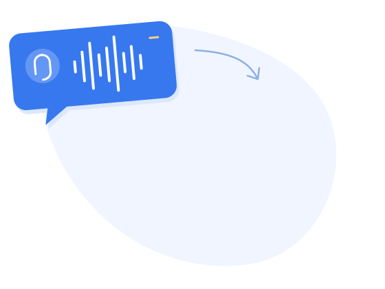

AI Notes
Automatizá la documentación de la consulta.
AI Notes genera un resumen automático para completar la historia clínica. Menos trabajo administrativo, consultas más ágiles y más tiempo para atender.
Quiero ver una demo
Sofía consulta para revisar sus estudios de control. Refiere encontrarse bien, sin síntomas nuevos.
Durante la videollamada, la médica revisa con la paciente los estudios enviados previamente y repasa sus antecedentes. Se acuerda continuar el seguimiento.
Estudios disponibles antes de la consulta.
El paciente envía sus estudios por email o WhatsApp. El médico los encuentra en Alvia para preparar la atención y completar la historia clínica con esa información.
Activación y consentimiento
El médico activa AI Notes en cada consulta después de informar y obtener el consentimiento expreso del paciente o su representante. El paciente puede pedir que se apague: la llamada continúa y la IA no vuelve a iniciarse en esa consulta.